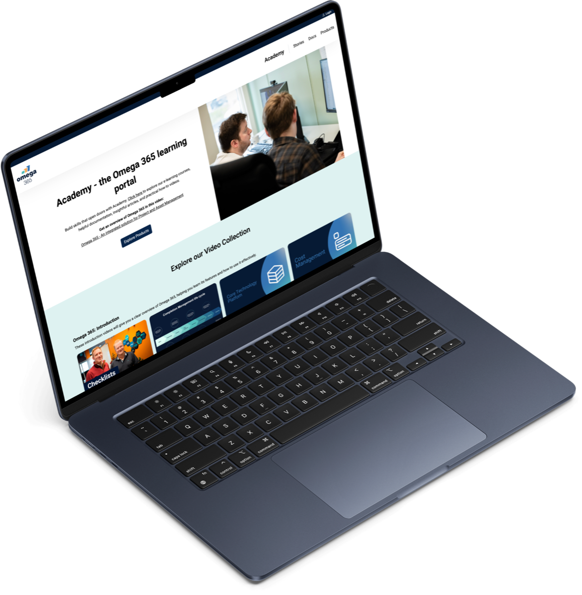

Omega 365 Academy
Omega 365
- Min rolle
- Design og frontend
- Metoder
- Analyse av eksisterende løsning, enkle brukerundersøkelser, wireframes, informasjonsarkitektur
Beskrivelse
Et redesign av Omega 365 Academy, læringsplattformen der kunder og ansatte finner kurs, videoer og artikler om Omega 365-systemene.
Kontekst
Den gamle nettsiden fungerte mest som et arkiv. Alt innholdet lå der, men strukturen var laget med utviklere i tankene, og det var vanskelig å finne fram. Jeg hadde ansvar for redesignet fra analyse til ferdig nettside, og utviklet også frontenden.

Utfordringen
Hvordan kan en samling kurs, videoer og artikler bli en læringsplattform som er lett å finne fram i?
Rammer
Academy er en offentlig side og en del av hvordan Omega 365 presenterer seg utad. Designet måtte derfor følge Omegas designsystem og merkevare, med farger, typografi og komponenter som allerede var etablert. Innenfor de rammene prøvde jeg å gjøre siden litt mer leken og innbydende, blant annet med illustrasjoner, siden den handler om læring. Samtidig måtte den fortsatt fremstå som profesjonell, så balansen mellom det lekne og det seriøse var en del av jobben.
Problemet
Alt innholdet fantes, men det lå samlet uten en tydelig struktur, og siden manglet det visuelle som gjør at man får lyst til å lære. Kurs, videoer og artikler måtte få hver sin plass, og samtidig henge sammen som én plattform.
Prosess
Forstå før jeg tegnet
Jeg startet med å gå gjennom den eksisterende siden og gjøre enkle brukerundersøkelser for å forstå hva folk lette etter, og hvor de ga opp. Ut fra det laget jeg wireframes med ulike løsninger for navigasjon og struktur, slik at retningen kunne vurderes tidlig før noe ble designet ferdig.
Ny informasjonsarkitektur
Jeg organiserte innholdet på nytt etter type og formål, slik at kurs, artikler og videoer fikk hver sin tydelige inngang. Grensesnittet ble designet med komponentene fra Omegas designsystem, slik at plattformen føltes som en del av resten av selskapet.
Fra design til kode
Til slutt bygget jeg frontenden selv, og bidro med enkle oppgaver i backend. Det ga meg en god forståelse av hvordan designvalg faktisk blir til kode, og hva som gjør et design enkelt eller vanskelig å bygge.
Resultat
Den nye siden har en tydeligere struktur og et mer moderne uttrykk. Brukerne vi snakket med etterpå fant raskere fram til relevant innhold, og opplevde navigasjonen som mer sammenhengende.
Hva jeg tar med meg
Jeg hadde ansvar for hele redesignet, fra analyse til ferdig kode. Jeg lærte hvor mye informasjonsarkitektur betyr for hvordan en side oppleves, og det å bygge løsningen selv ga meg en bedre forståelse av hva designvalgene mine betyr for den som skal utvikle dem.